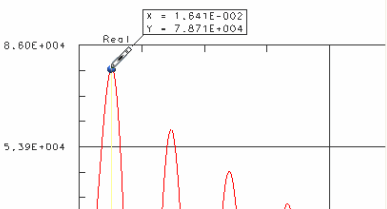

生成位移云图结果
生成整个模型在最大和最小加速度时间点处的响应.
 仿真导航器
仿真导航器
-
 Transient_Analysis_1(事件节点)
Transient_Analysis_1(事件节点) -
 评估云图结果→响应
评估云图结果→响应 -
请求的结果
-
 应力
应力
-
 位移
位移 -
响应节点
-
选择节点
-
 在上方的视图窗口中框选整个模型，以选择全部节点。
在上方的视图窗口中框选整个模型，以选择全部节点。 -
 从 XY 图表(方法)
从 XY 图表(方法) -
从 XY 图表方法让您选择时间点，以从该时间点开始评估绘制的函数，您也可以使用起点/终点方法，然后手动输入这些时间点。
-
点值
-

-
1_(1Z+)
-
确定
方程式选择对话框
-
在下方的图形窗口中进行选择
-
放大/缩小(视图工具条)
拖动以放大曲线的最高点注释
您放大之后，必须再次点击 按钮以关闭缩放模式。
-
选择曲线上的最高点(选择您在上一步使用探针模式插入的最大加速度点)

-
放大/缩小(视图工具条)
拖动以放大曲线的最低点Note
您放大之后，必须再次点击 按钮以关闭缩放模式。
-
选择曲线上的最低点
-
确定
注意您选择的两个点值现在出现在对话框的点值列表中，这两个值应该接近于最大(1.62500E-002)以及最小(3.12500E-002)时间点。
-
确定
这一步将生成整个部件在最大和最小加速度时间点处的响应。
-
 返回到模型(布局管理器工具条)
返回到模型(布局管理器工具条) -
下方的视图窗口
稍后您将查看云图结果。